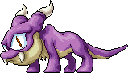

마나 엘릭서
소비드랍 몬스터 121종
이 아이템을 주는 몬스터 121종

와일드카고Lv.62 · 회피 20드레이크의밥상 원공Lv.62 · 회피 25천도 과수원1드랍 정보는 고전 메이플 서버 데이터(Cosmic, AGPL-3.0) 기준 참고용이고 일부는 메이플랜드 자료로 확인했어요. 드랍률은 넣지 않았어요.

와일드카고Lv.62 · 회피 20드레이크의밥상 원공Lv.62 · 회피 25천도 과수원1드랍 정보는 고전 메이플 서버 데이터(Cosmic, AGPL-3.0) 기준 참고용이고 일부는 메이플랜드 자료로 확인했어요. 드랍률은 넣지 않았어요.